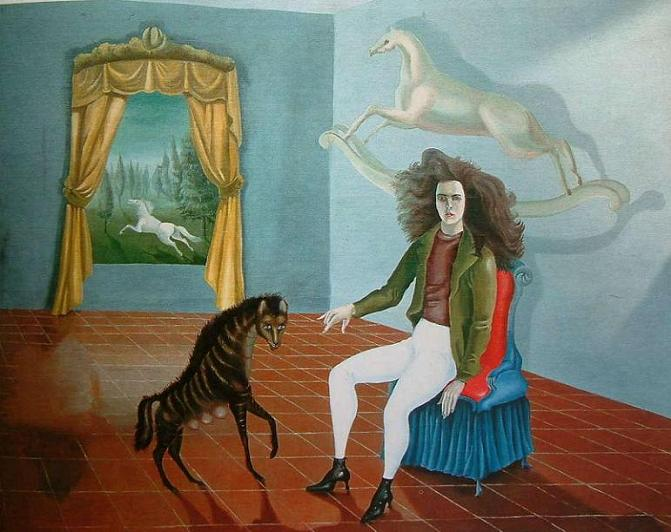
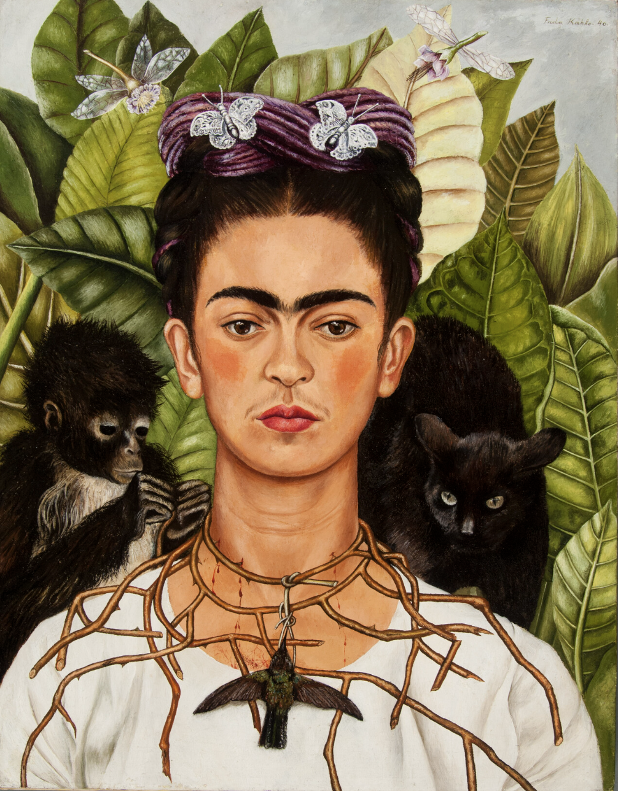

Surrealism was a very defining time in Modern art that came after the Second World War. There are alot of parallels between the conditions of life then and now, even though so many years have passed. If we look closely there are many secrets hidden in plain sight in these powerful images.
Lezley Irene Saar is an African American artist whose artwork is responsive to race, gender, female identity, and her ancestral history. Her works are primarily mixed media, 3-dimensional, and oil & acrylic on paper and canvas. Through her artistic practice Lezley explores western and non-western concepts of beauty, femininist psychology and spirituality.
Many works conjure elements of magical realism. She has exhibited widely in the U.S. and internationally. Her work is included in museum collections such as The Kemper Museum,
CAAM, The Ackland Art Museum, the Smith College Museum of Art, the Studio Museum in Harlem and MOCA.[1] She is currently represented by Walter Maciel Gallery in Los Angeles and Various Small Fires in Asia.
In Fini's composition with figures on a terrace we see some kind of surrealist matriarchy, in which the women have wild and dominant features. We can see them with the hair untidy, elegantly dressed and with a pronounced cleavage (let us remember that, in the year 1939, this type of cleavages could be considered pornographic).
Both women in the foreground seem to be in control of the poor man that, sitting in a position below them, gives us the impression of being a slave.
Self-Portrait (Inn of the Dawn Horse), Leonora Carrington (1938)
Sporting white jodhpurs and a wild mane of hair, Carrington is perched on the edge of a chair in this curious, dreamlike scene, with her hand outstretched toward the prancing hyena and her back to the tailless rocking horse flying behind her. The daughter of an English industrialist, Carrington spent her childhood on a country estate surrounded by animals and reading fairy tales and legends.
She revisited these memories in her adulthood, creating paintings populated with real and imagined creatures. Here, the white horse, which Carrington used as her symbolic surrogate, gallops freely into the verdant landscape beyond the curtained window.
Remedios Varo's painting has musical resonances, where inaudible melodies are capable of unleashing magical powers and supernatural enchantments, releasing amazing charges of energy that break into the common world of mortals ...
Armonía was conceived as a self-portrait where she assumes the functions as the organizer of the universe, using staves to establish communication with beings of other dimensions through magical crystals and quartz stones, as if she were a
Hermes Trismegisto, possessor of universal wisdom through alchemy and hermeticism.
Self-Portrait with Thorn Necklace and Hummingbird, Frida Kahlo (1940)
Considering the events in Frida Kahlo’s personal life between 1939 and 1940, Self-Portrait with Thorn Necklace and Hummingbird is filled with symbolism that ultimately expresses her inner world throughout this time.
Kahlo often painted symbolically, with herself as the main protagonist, incorporating religious, political, cultural, gender, and ancestral motifs intricately bound to ideas of martyrdom, loss, pain, grief, love, colonialism, identity, and her political and philosophical ideals as well as her Mexican heritage.
Additionally, Kahlo also portrayed animals to convey deeper ideas; she had numerous animals like spider monkeys, parrots, dogs, cats, and more, all of which undoubtedly inspired her and found a place in her self-portraits. In Self-Portrait with Thorn Necklace and Hummingbird, there is a spider monkey, a black cat, butterflies, dragonflies, and the eye-catching hummingbird hanging from its beak from the thorn necklace around Kahlo’s neck. What do all of these symbolize?